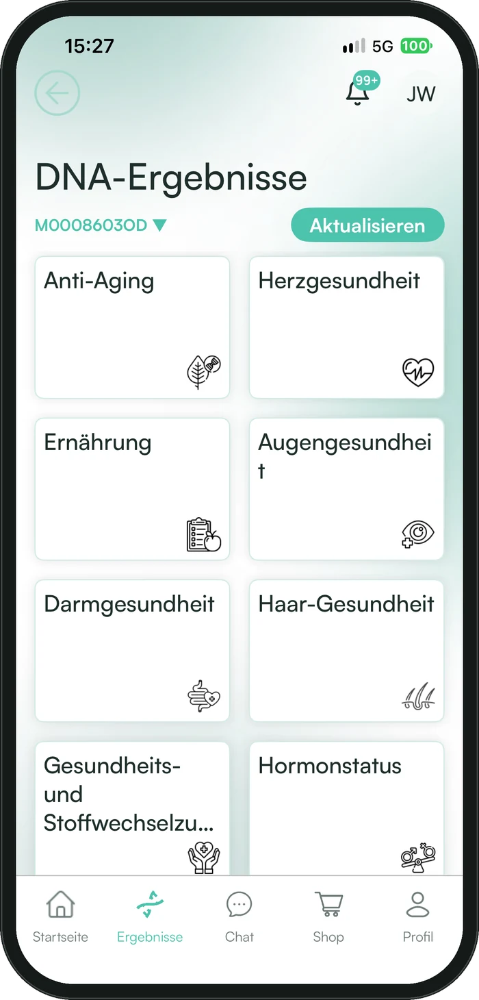
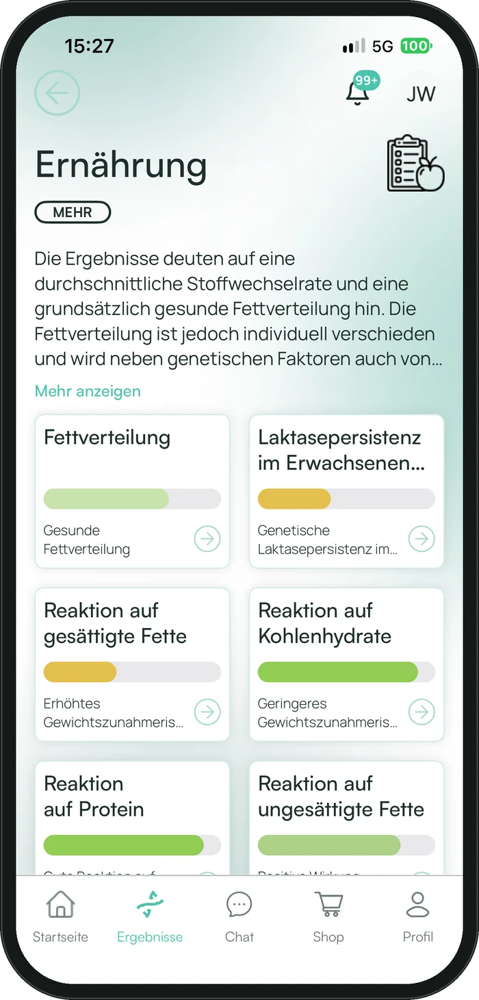
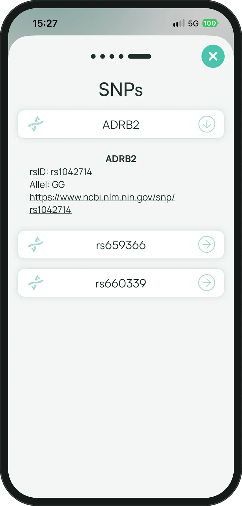
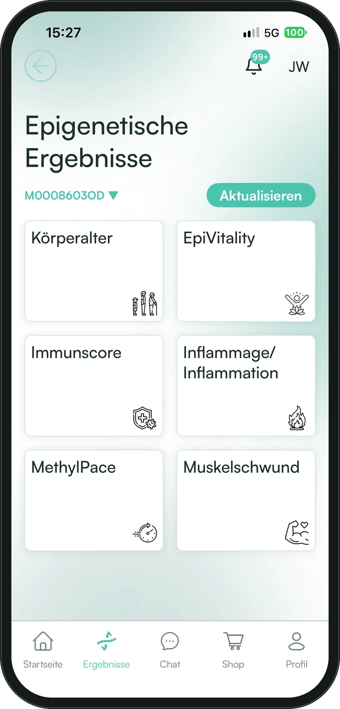
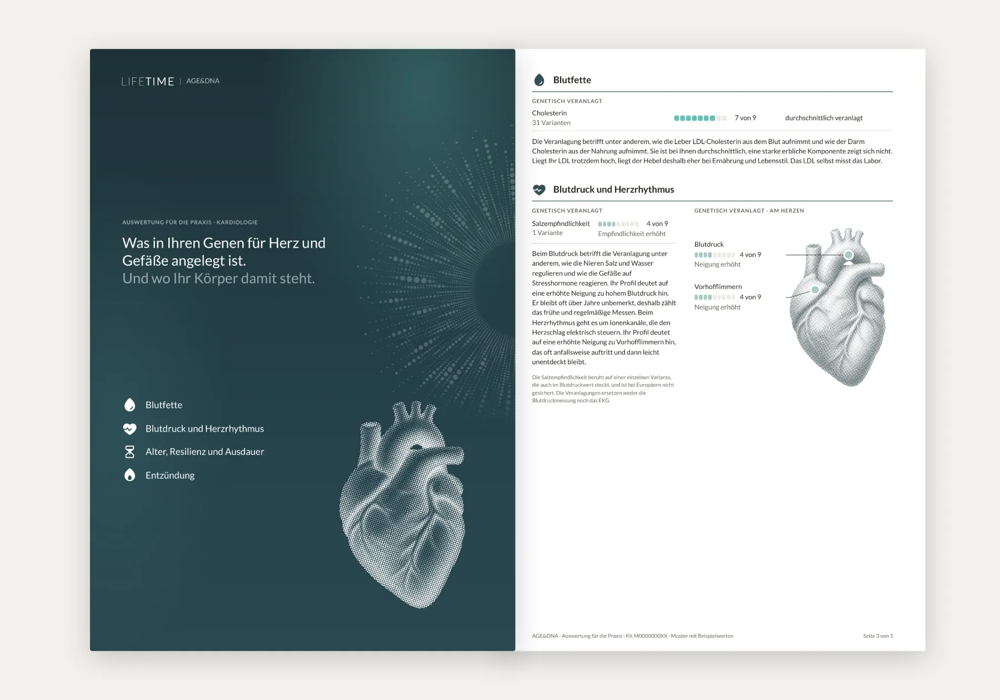
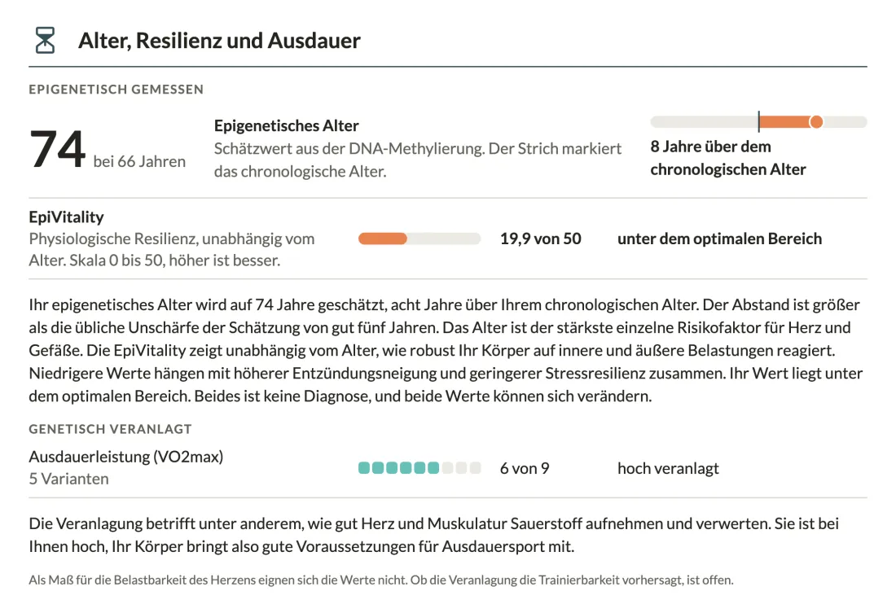
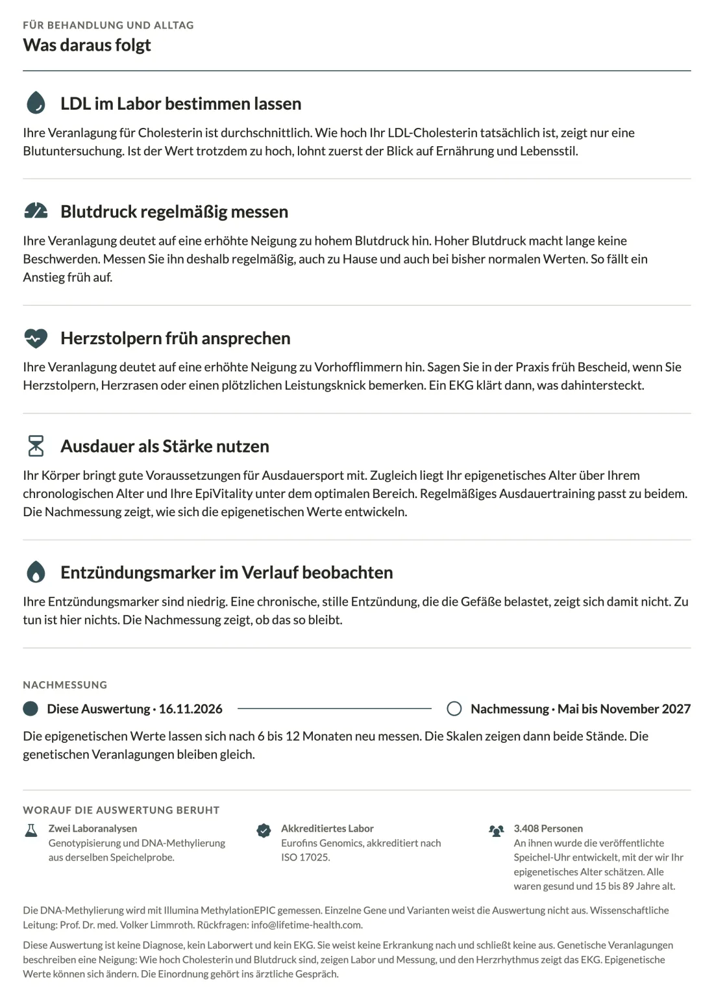

Blutfette
Genetisch veranlagtCholesterin aus 31 Varianten. Varianten in LDLR, ABCG5 und ABCG8 heben das LDL schon in jungen Jahren an. Dann reicht Ernährung allein nicht aus.
7 von 9durchschnittlich veranlagt
Für niedergelassene Kardiologinnen und Kardiologen. So wissen Sie früher, wem bei Cholesterin und Blutdruck der übliche Rat nicht reicht. Testen Sie ihn zuerst an sich selbst und bieten Sie ihn danach Ihren Patienten an.
Jetzt selbst testen
Test bestellenEr läuft, isst Gemüse und hält sich an Ihren Rat. Drei Monate später hat sich sein Wert kaum bewegt.
Nur 28 % der behandelten Patienten in Deutschland erreichen ihr LDL-Ziel.2
Zwei Patienten mit gleichem LDL von 160 mg/dl bekommen denselben Rat. Nach drei Monaten liegt Patient A bei 132, Patient B bei 157. Von außen ist das nicht zu erkennen. Die genetische Veranlagung für Cholesterin zeigt es vorab: Patient A 7 von 9, Patient B 2 von 9. Beispielwerte.
Cholesterin aus 31 Varianten. Varianten in LDLR, ABCG5 und ABCG8 heben das LDL schon in jungen Jahren an. Dann reicht Ernährung allein nicht aus.
Die Neigung zu hohem Blutdruck und zu Vorhofflimmern. Varianten in STK39 und MTHFR begünstigen schon früh hohe Werte. Da lohnt sich frühes, regelmäßiges Messen.
Das epigenetische Alter, oft auch biologisches Alter genannt, messen wir über die DNA-Methylierung, den Goldstandard der Altersforschung. Dazu kommen die EpiVitality als Maß der Resilienz und die Veranlagung für Ausdauer.
Entzündungsmarker aus der DNA-Methylierung. Sie zeigen die stille Dauerlage, nicht den einzelnen Infekt.
Beispielwerte aus dem Muster. Skala 1 bis 9, höher ist besser.
Sie kommen aus 23 Kategorien wie Ernährung, Schlaf und Stress. In der App sehen Sie zu jedem Ergebnis die untersuchten Gene.
Echte Screens eines Testkunden.







Sie sehen früher, wer mehr braucht als den üblichen Rat, und stimmen Vorsorge, Kontrollen und Therapie darauf ab.
Ihre Patienten bekommen dieselbe Auswertung wie Sie, mit Skala, Zahl und dem, was daraus folgt.
Ab Januar bieten Sie Test und Auswertung in Ihrer Praxis an. Die Konditionen für Pilotpraxen besprechen wir im Kollegengespräch.
Ich bitte Sie um eines, bevor Sie das einem Patienten empfehlen: Testen Sie es an sich selbst. Lesen Sie Ihre Auswertung so, als würden Sie sie einem Patienten erklären. Dann sprechen wir 30 Minuten darüber, und Sie sagen mir, was für Ihre Sprechstunde fehlt.
Ich führe jedes Kollegengespräch selbst, und jede Auswertung entsteht einzeln. Deshalb nehmen wir in die Pilotphase 25 kardiologische Praxen auf.
Prof. Dr. med. Volker LimmrothNeurologe, seit über 20 Jahren Chefarzt · wissenschaftliche Leitung LIFETIME · Autor des SPIEGEL-Bestsellers „Der Longevity-Kompass“ · über 200 wissenschaftliche Veröffentlichungen
So viele von 130 Hausärztinnen und Hausärzten in den USA fühlten sich nach ihrem eigenen Test sicher im Gespräch über Genetik.1
So viele Patienten begannen in einer randomisierten Studie der Mayo Clinic ein Statin, wenn ihr Risiko die Gene mit einschloss.7
Getestet wurde dort ein genetischer Score für die koronare Herzkrankheit, nicht der Cholesterin-Wert dieser Auswertung.
„Als Arzt war ich skeptisch. Aber der Test hat mich überzeugt. Die Methodik hinter dem MethylPace-Score ist solide. Das ist kein Consumer-Gadget.“
„Sehr empfehlenswert. Mein Arzt war vom detaillierten Ergebnis beeindruckt.“
Später, wenn Sie möchten: die Nachmessung nach 6 bis 12 Monaten für 245 € statt 299 €.
Was wir uns von Ihnen wünschen: Ihre Rückmeldung in fünf Fragen, was der Auswertung für Ihre Sprechstunde fehlt.
Bringt Ihnen die Auswertung nach unserem Gespräch für Ihre Sprechstunde nichts, schreiben Sie mir, was konkret gefehlt hat, und Sie bekommen Ihr Geld zurück.
Voraussetzung: Probe binnen 30 Tagen nach Erhalt des Kits eingeschickt, Kollegengespräch geführt, Ihre Begründung binnen 14 Tagen danach. Gilt für Pilotpraxen mit Praxisangabe bei der Bestellung, einmal je Praxis.
Daneben gelten 90 Tage Rückgabe, solange das Kit versiegelt ist. Ist eine Probe nicht auswertbar, bekommen Sie ein neues Kit.
Wir messen es über die DNA-Methylierung. Sie ist der Goldstandard, mit dem die Forschung das biologische Alter und die Wirkung von Interventionen misst.8 Die epigenetische Uhr dahinter ist veröffentlicht und wurde an 3.408 Menschen entwickelt.6 Telomerlänge, Proteomik oder Griffkraft sind deutlich schwächer validiert. Schon der einzelne Wert ist deshalb präzise, und im Verlauf zeigt er, was sich verändert.
Ihre Probe läuft unter einer Kit-ID. Die Daten liegen DSGVO-konform auf EU-Servern. Zugriff haben nur die Stellen, die Analyse und Bereitstellung brauchen. Die Löschung können Sie jederzeit beantragen.
Die Garantie greift, wenn Sie den Test wirklich geprüft haben: Sie schicken Ihre Probe binnen 30 Tagen nach Erhalt des Kits ein, führen das Kollegengespräch und schreiben Prof. Limmroth binnen 14 Tagen danach, was der Auswertung für Ihre Sprechstunde konkret fehlt. Dann erstatten wir den Kaufpreis.
Gilt für Pilotpraxen mit Praxisangabe bei der Bestellung, einmal je Praxis.
Nein. Kein Vertrag, kein Abo, keine Abnahme, keine Provision. Wir bitten Sie nur um Ihre ehrliche Rückmeldung.
Ja, das ist der zweite Schritt, geplant ab Januar. Sie bieten Test und Auswertung als Selbstzahlerleistung in Ihrer Praxis an, zu Konditionen für Pilotpraxen. Die Einzelheiten besprechen wir im Kollegengespräch.
Die Pilotphase ist für Ärztinnen und Ärzte in eigener Praxis, wir prüfen jede Anmeldung. Den Test ohne Pilotpaket finden Sie hier.
Für die nächste Runde vormerken
P.S. Bringt Ihnen die Auswertung für die Sprechstunde nichts, bekommen Sie Ihr Geld zurück. Ich freue mich auf unser Gespräch.
Prof. Dr. med. Volker Limmroth